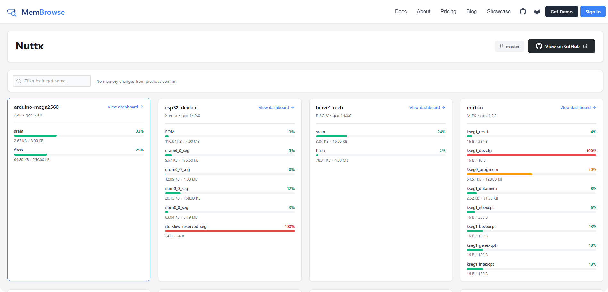

NuttX CI Process
NuttX is a complex system with lots of compile-time configurable switches and values. What’s more is that NuttX supports hundreds of different hardware targets, across multiple different architectures. This complexity makes it critical to have CI processes for testing incoming patches.
Note
The NuttX CI resources are limited, and not everything in the kernel can be reasonably tested in CI (for instance, there is currently no support for testing directly on hardware targets via CI, although it’s being worked on).
It is for this reason that NuttX still request patch authors perform their own local testing (especially on hardware where applicable) to submit alongside their patch so reviewers may have some confidence that the change will not introduce obvious regressions.
Tip
NuttX is always appreciative of improvements to our processes! If you have suggestions to improve the CI infrastructure, please let the community know. Our CI team is currently bearing a high workload.
The focus of this documentation is the CI testing that takes place when a PR is opened on the nuttx (and nuttx-apps) GitHub repositories.
CI Stages
When a PR is opened, the following CI actions take place:
Pull request labeller assigns labels to the PR
PR is checked using the host tool checkpatch.sh
Linting is performed using Super-Linter
Build tests are performed based on which files were modified
Some CI runtime tests are performed on simulators/emulators through NTFC (NuttX Test Framework for Community).
Memory footprint of a set of representative targets is tracked using MemBrowse (see Memory Footprint Tracking).
Pull Request Labelling
This action is responsible for:
Labelling the PR with the label(s) corresponding to changed files (i.e. files changed under
arch/arm/**are labelledArch: arm).Labelling the PR with a PR size (i.e.
Size: XS,Size: M, etc.)
The workflow file for this action is located at
.github/workflows/labeler.yml. This file contains documentation in the form
of comments. To compute the PR labels, it:
Gets information about the changes from GitHub (i.e. files and lines changed)
Sums the total lines changed and assigns PR size labels based on this number
Uses the wildcard paths-to-label assignments in .github/labeler.yml to assign the correct change labels to PRs.
Types of labels are:
Arch labels (i.e.
Arch: arm,Arch: risc-v, etc), associated with changes inarch/Board labels (i.e.
Board: arm,Board: sim, etc) associated with changes inboards/Area labels (i.e.
Area: Bluetooth,Area: Crypto,Area: Drivers) associated with several different kernel “areas”
Once this workflow is done running, the PRs labels are updated by the computed result and PRs in the pull-requests tab can be sorted according to these labels.
Tip
You can filter PRs by the Size: XS, Size: S to review small PRs
quickly in between work :)
Checkpatch
More information about the checkpatch.sh tool itself can be found at
checkpatch.sh.
The goal of this action is to verify that the PR adheres to the C coding standard, does not contain typos and adheres to the commit message format. Additionally, format checking of CMake files has been added to the checks.
The workflow file for this action is very short and can be found at
.github/workflows/check.yml.
Build
This is the most complex step in the CI process, and also the longest duration.
It selects a category of NuttX configurations (defconfig files) associated
with the changed files and builds them all in parallel. It also uses the
tools/refresh.sh utility to check if any configurations need to be
normalized (see refresh.sh) for more information).
The workflow file for this check is located at .github/workflows/build.yml.
The name of this workflow is deceiving, as it does not only build
configurations, but also normalizes them and runs NTFC
tests on architectures that support it.
Pull Request Dependencies
NuttX and nuttx-apps are built together. A change that spans both
repositories may therefore need to test two pull requests together before
either one is merged. A pull request targeting master can declare same- or
cross-repository dependencies in its description.
The recommended form is one dependency per line:
Depends-On: https://github.com/apache/nuttx-apps/pull/1234
Depends-On: https://github.com/apache/nuttx/pull/5678
Alternatively, multiple dependencies can use a single bracket list:
Depends-On: [apache/nuttx-apps/pull/1234 https://github.com/apache/nuttx/pull/5678]
The Depends-On: marker is case-insensitive; Depends-On:,
depends-on:, and mixed-case spellings are equivalent. This documentation
uses Depends-On: as the canonical form.
References may use either a complete https://github.com/... URL or the
short owner/repository/pull/number form, and the forms may be mixed. Each
accepted reference must identify a pull request in apache/nuttx or
apache/nuttx-apps. Other tokens are ignored; a declaration is invalid only
when a Depends-On: marker is present but no valid dependency can be parsed.
Multiple declarations are applied in their listed order, and duplicate
references are applied only once. Each declaration must remain on one line;
Markdown bullet-list continuations are not supported. Pull requests without a
Depends-On: declaration retain the normal CI source selection.
Declarations in release and backport pull requests are ignored because
dependencies are applied only when the target branch is master.
The Fetch-Source job fetches each valid dependency’s exact head SHA and
cherry-picks its commits into the corresponding checkout before the existing
build matrix runs. Invalid declarations are not applied: CI continues with the
normal source selection and posts a warning that the declaration could not be
parsed. If a valid dependency cannot be fetched, has no common history, its
commit list cannot be determined, or it causes a cherry-pick conflict,
Fetch-Source fails instead of silently testing without the requested
dependency.
When a valid dependency report is available, the follow-up comment reports one of three outcomes:
successfully applied dependencies and their fetched head SHAs (abbreviated in the comment)
a declaration from which no valid dependency could be parsed
valid dependencies that could not be applied and the failure reason
The write-capable follow-up workflow does not execute fork code. It validates the untrusted report’s structure, repository allow-list, run and current PR head binding, and fixed rendering fields before commenting. These checks make posting the report safe, but do not independently attest that the dependency was applied; the comment reflects the result produced by the read-only Build workflow.
Editing the pull request description does not trigger CI. Every Build run
reads the current description when it starts. After changing a
Depends-On: declaration, retrigger CI in one of these ways:
push new or rebased commits to the pull request branch
close and reopen the pull request
press “Re-run all jobs” on the existing Build run
Updating a dependency pull request does not automatically trigger the initiating pull request either, so its CI must be rerun to test the new dependency head.
The combined result belongs to the initiating pull request. It does not set a status on dependency pull requests, merge them automatically, or replace the need to coordinate their merge order.
The steps executed in the build workflow are:
Fetch source: checks out
nuttxandnuttx-appsrepos. The source files are added as an artifact to the GitHub action so that it can be downloaded by subsequent steps.In parallel, the builds to be performed are selected for each host OS/setup supported by NuttX. These are Linux, MacOS, MSVC and MYSYS2.
Note
Typically only performed in the Linux environment. Performing the builds across all host options consumes too many resources.
MacOS builds are currently always skipped, but sometimes tests are performed for MSVC and MYSYS2. These builds are a small subset of the total builds performed on Linux, but which were selected to still cover a range of architectures. Some selected builds are
raspberrypi-pico:nsh,rv-virt:nsh,sim:windows, etc.Once the build is selected for a host configuration (i.e. Linux), the builds are performed in parallel. For example, if in Step 2 the selected Linux builds were
arm-01,arm-02andarm-03, this step will perform the build test for each category in parallel.This involves compiling all of the
defconfigconfigurations included in each category and runningtools/refresh.shon them. Some categories, likesim-01also perform NTFC tests. In this case, the NTFC runtime tests are run using the architecture’s designatedcitest/defconfigconfiguration.After each category’s builds are complete, make host_info is run in each category’s runner as a sanity check.
After all the selected Linux builds complete, an out-of-tree (OOT) build test is performed. This is done using
tools/ci/cibuild-oot.sh.
Each build category (arm-01, etc.) produces a build artifact which contains
all of the resulting build outputs for that category. This includes the
resulting nuttx.bin, nuttx.elf, nuttx.hex, etc., binaries. You
should be able to download the artifact, flash the NuttX image(s) to your target
device and test them that way if you’d like to avoid building all of the images
yourself!
Memory Footprint Tracking
Dashboard: https://membrowse.com/public/apache/nuttx
The memory footprint of a set of representative targets is tracked over time using MemBrowse. This makes flash/RAM usage changes visible on a per-section and per-symbol basis and helps catch unintended size regressions. It:
provides a trend graph of the builds across commits
lets you compare the footprint between any two uploaded commits
posts a footprint summary comment on each pull request

The integration consists of:
the set of tracked targets, configured in
.github/membrowse-targets.jsonthe
membrowse-*.ymlworkflows under.github/workflows/that drive it